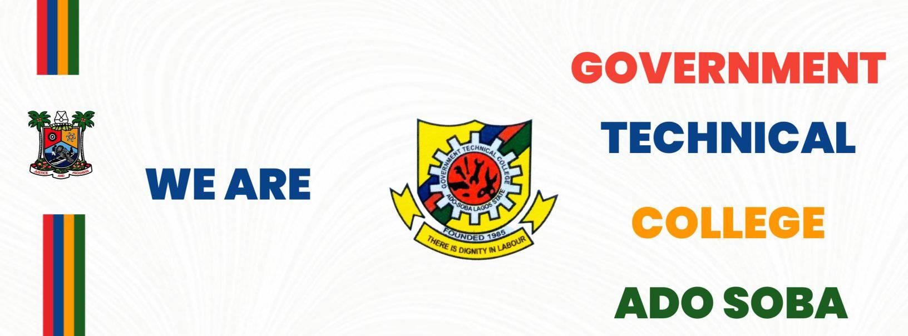
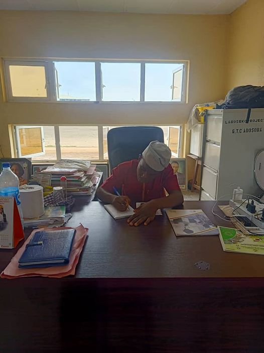
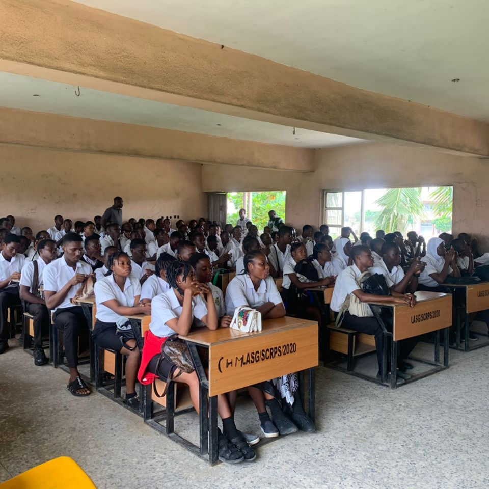
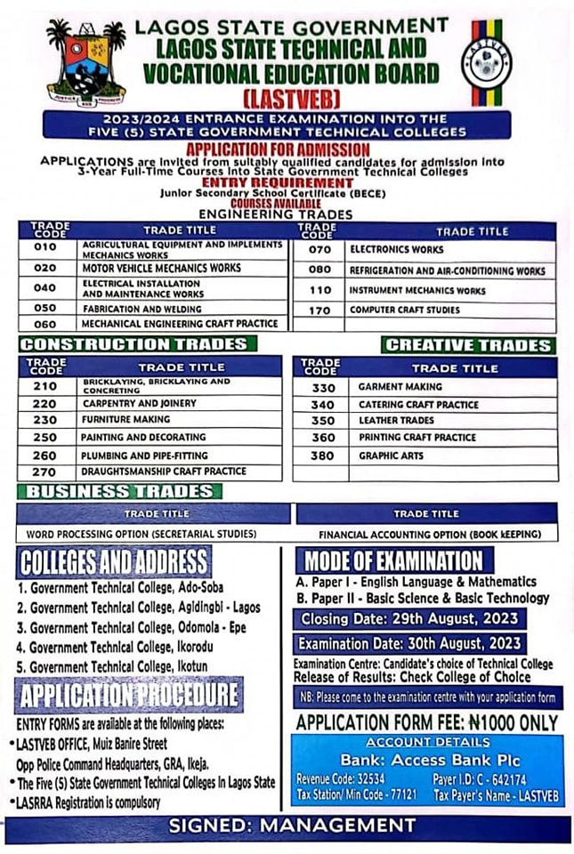
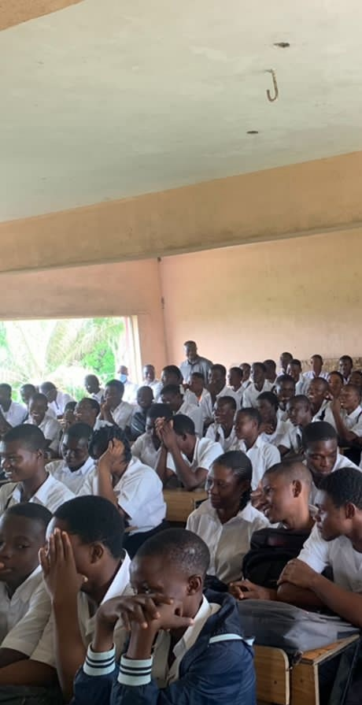

NEWS:
GTC-ADOSOBA
Home

GTC-ADOSOBA NEWS
4 OF JULY 2023:
Recap of Our One-Day Principal Event! 🌟 Wednesday the 5th of July, 2023 was an extraordinary day at Government Technical College Ado Soba as we had the privilege of welcoming Mr. Balogun Joshua Ayomide, one of our exceptional students, as our One-Day Principal! 🎉 Balogun Joshua Ayomide, with his exemplary dedication and passion for education, took on the role of Principal for the day. Throughout his tenure, he immersed himself in the college's activities, engaging with our sections, staff, and students. As our One-Day Principal, Balogun gained valuable insights into the challenges and responsibilities faced by educational leaders. He actively participated in decision-making processes and observed the day-to-day operations of our college. His fresh ideas and unique perspective left a lasting impact on our institution. The college community warmly embraced Balogun, interacting with him, sharing their thoughts, ideas, and experiences. His presence brought a renewed sense of enthusiasm and inspiration to our college. Students were motivated by his journey, seeing firsthand that their dreams and aspirations can become a reality. We extend our heartfelt gratitude to Balogun Joshua Ayomide for his outstanding contributions as our One-Day Principal. He exemplifies the potential within our student body and serves as a shining example of the leadership qualities we foster at Government Technical College Ado Soba. We would also like to express our appreciation to LASTVEB, the Management, sections, staff, and students who made this event a memorable success. Your active participation and support created an inclusive and nurturing environment for Balogun. As we reflect on this remarkable event, we are reminded of the power of student leadership and the boundless opportunities that education offers. Let's continue to inspire and empower our students to reach for greatness. Stay tuned for upcoming events and initiatives as we strive to provide a transformative educational experience at Government Technical College Ado Soba. Together, we will strengthen a brighter future for all! A Publication of the Office of the Principal, Government Technical College, Ado Soba, Lagos. #lastveb #LASG #gtcadosoba #safetylasg #OneDayPrincipalRecap #StudentLeadership #EducationMatters #InspiringStudents #EmpoweringEducation #LeadershipJourney #StudentSuccess #FutureLeaders #TransformingEducation 
4 OF JULY 2023:
"📢 ATTENTION TECH 3 STUDENTS OF GOVERNMENT TECHNICAL COLLEGE ADO SOBA! 🎓 📚🔬🔧 Calling all our brilliant Tech 3 students! It's time to gear up for your final exams, and we couldn't be prouder of all that you've achieved during your time here at GTC ADO SOBA. 🎉 👏 Congratulations on reaching this important milestone in your educational journey! This is a moment to reflect on your hard work, dedication, and the knowledge you have gained over the years. We believe in your abilities and are confident that you will excel in your exams. 💪 🌟 As you prepare for this significant challenge, it is crucial to remember the values and skills that GTC ADO SOBA has instilled in you. Our institution has always emphasized competency and maintaining high standards, and we expect nothing less from you as you embark on this final leg of your academic voyage. ⭐ 📝 During the exams, it is vital to conduct yourselves with integrity, discipline, and honesty. Adhere strictly to the rules and regulations set by the examination board. Your commitment to ethical behavior will not only reflect positively on yourselves but also uphold the reputation of GTC ADO SOBA. 📚🧠 📣 Remember, it's not just about the grades. It's about showcasing your knowledge, skills, and problem-solving abilities. Believe in yourself, stay focused, and approach each question with confidence. Your teachers and mentors have equipped you with the necessary tools; now it's up to you to showcase your brilliance. 💡 🎯 The road ahead might seem challenging, but trust in your abilities and persevere. The entire GTC ADO SOBA community stands behind you, cheering you on every step of the way. 🙌 📅 The exams start on Monday, 26th June, so make sure you are well-prepared, well-rested, and ready to give it your all. You've got this! 💯 🎓 Good luck, Tech 3 students! Remember, your success is not just about the destination but also the journey. Keep striving for excellence and make GTC ADO SOBA proud! 🎓 #lastveb #LASG #gtcadosoba #safetylasg #Tech3Exams #CompetencyMatters #Discipline #StriveForExcellence #FinalExams #CongratulationsTech3 #MaintainHighStandards #DisciplineMatters #ProudOfOurStudents #SuccessIsWithinReach 
4 OF JULY 2023:
DISCOVER YOUR PATH TO SUCCESS AT GOVERNMENT TECHNICAL COLLEGE ADO SOBA Seeking a Bright Future? Look no further! Our prestigious college, Government Technical College Ado Soba, is now accepting admissions for the upcoming academic year. Embrace a world of endless opportunities and unlock your potential with our cutting-edge technical education programs. Why Choose Government Technical College Ado Soba? Accredited Programs: Our courses are recognized and approved by relevant authorities, ensuring a high-quality education. Experienced Instructors: Learn from industry experts who are passionate about guiding you towards excellence. Holistic Approach: Gain not only technical skills but also essential life skills for personal and professional growth. Industry Partnerships: Benefit from our strong ties with leading companies for internships and job placements. Don't miss out on this golden opportunity! Secure your future by applying for the admission form now. Limited seats available, so act fast! Join us and step into a promising tomorrow! #lastveb #LASG #gtcadosoba #safetylasg #AdmissionOpens #EnrollNow #GTCAdoSoba #TechnicalEducation #BrightFuture #EducationMatters #TechnicalCollegeLife #SkillsForSuccess #FutureFocused #EmpowerThroughEducation #TechSkills #LearnGrowSucceed #CareerOpportunities #AcademicExcellence #UnlockYourPotential 
4 OF JULY 2023:
TECH 1 STUDENTS WROTE EXAMS. 
4 OF JULY 2023:
TECH 1 STUDENTS WROTE EXAMS.
 Home
Home